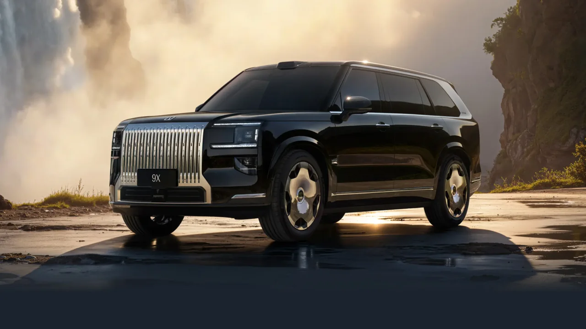
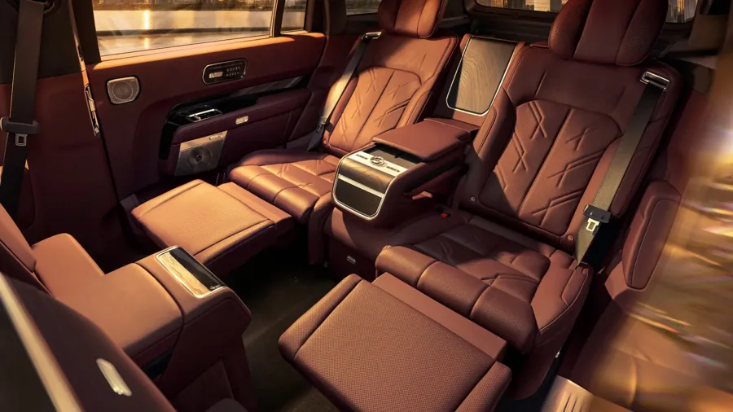
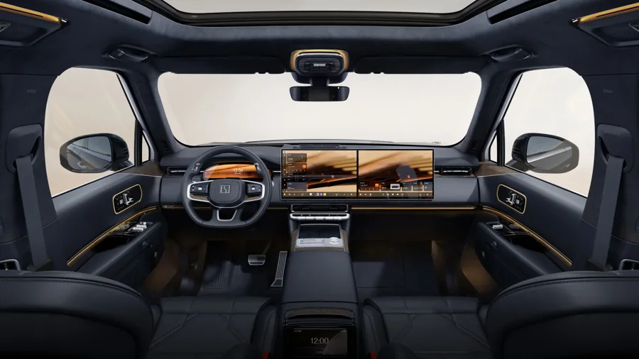

ZEEKR / Гибридные SUV
ZEEKR 9X
Полноразмерный гибрид с зарядкой от сети. Для китайского рынка ZEEKR выпускает версии с двумя и тремя рядами сидений.

- Длина кузова
- 5 239 мм
- Колёсная база
- 3 169 мм
- Мест в салоне
- 5 или 6
Салон и посадка
У шестиместного 9X три ряда по два кресла. В пятиместной версии пассажиры размещаются в двух рядах. В полном обзоре можно рассмотреть салон и сравнить оснащение версий.

